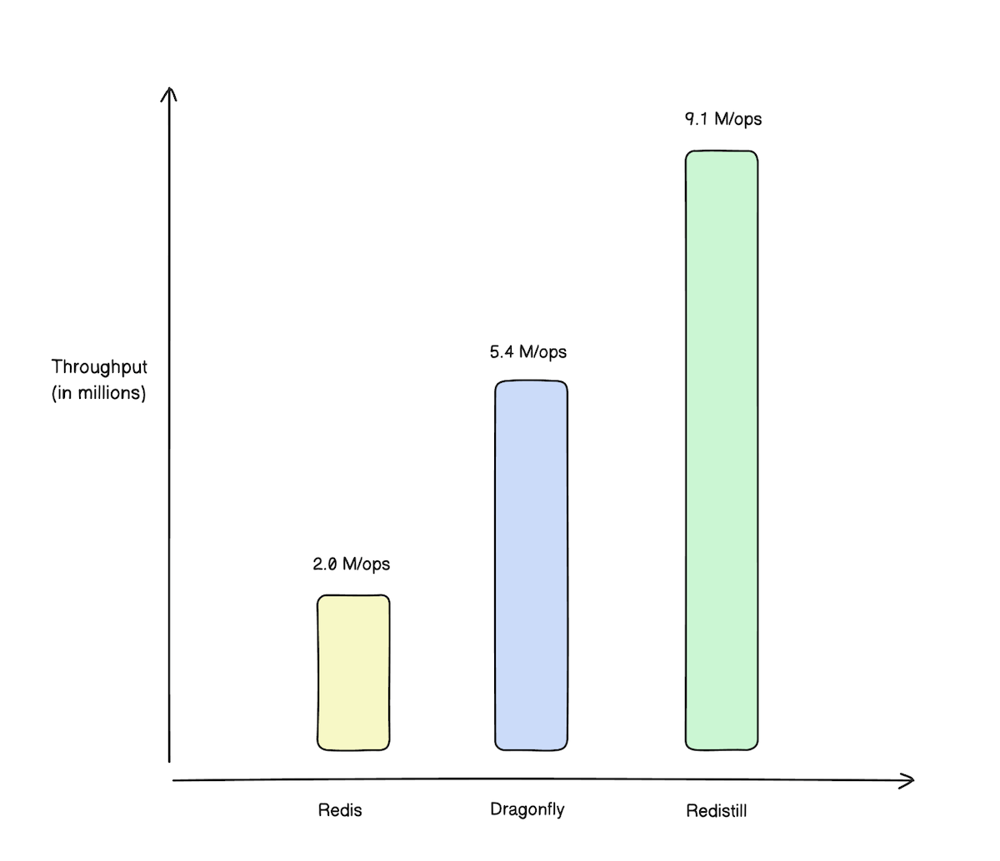
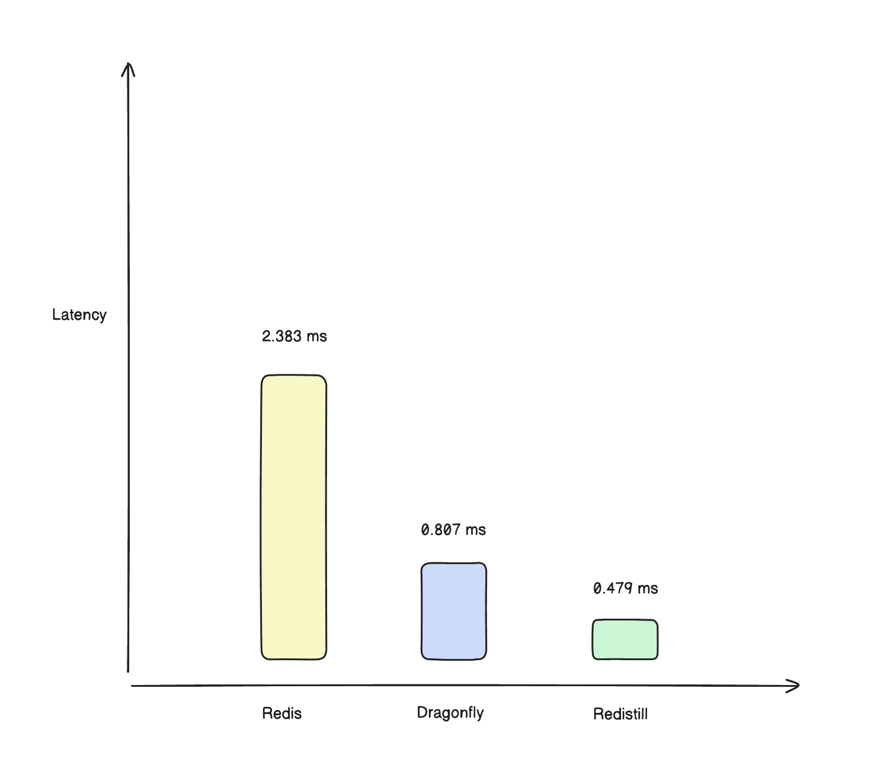

Quick summary
On an AWS c7i.16xlarge instance (64 vCPUs, 128 GB RAM), Redistill outperforms both Redis and
Dragonfly in a 1:1 mixed SET:GET workload using memtier_benchmark.
| Metric | Redistill | Dragonfly | Redis | vs Redis | vs Dragonfly |
|---|---|---|---|---|---|
| Throughput | 9.07M ops/s | 5.43M ops/s | 2.03M ops/s | 4.5× | 1.7× |
| Bandwidth | 1.58 GB/s | 923 MB/s | 337 MB/s | 4.7× | 1.7× |
| Avg latency | 0.524 ms | 0.877 ms | 2.000 ms | 3.8× faster | 1.7× faster |
| p50 latency | 0.479 ms | 0.807 ms | 2.383 ms | 5.0× faster | 1.7× faster |
| p99 latency | 1.215 ms | 1.975 ms | 2.959 ms | 2.4× faster | 1.2× faster |
| p99.9 latency | 1.591 ms | 2.559 ms | 4.159 ms | 2.6× faster | 1.6× faster |
Redistill processed 544M total operations in this test (2.7× more than Dragonfly, 4.5× more than Redis) with consistently lower tail latency and no errors across all systems.
Throughput, latency and bandwidth
The upstream documentation includes simple visualizations of the competitive benchmark.
To reuse those charts, copy the images from the main project
docs/img/ directory into this site's assets/img/ directory:
throughput.png, latency.png, and bandwidth.png.
Throughput comparison (higher is better)
Latency p50 (lower is better)
Bandwidth comparison (higher is better)

Detailed results (c7i.8xlarge)
On a slightly smaller AWS c7i.8xlarge (32 vCPUs, 64 GB RAM) using redis-benchmark, Redistill
matches or beats Redis across all workloads, with especially strong gains on read-heavy tests.
| Workload | Redistill | Redis | Improvement |
|---|---|---|---|
| Interactive (-c 1, -P 1) | 39K ops/s | 39K ops/s | Similar |
| Production SET (-c 50, -P 16) | 2.08M ops/s | 1.69M ops/s | +23% |
| Production GET (-c 50, -P 16) | 2.05M ops/s | 1.94M ops/s | +6% |
| High concurrency SET (-c 300, -P 32) | 2.67M ops/s | 2.23M ops/s | +20% |
| High concurrency GET (-c 300, -P 32) | 3.47M ops/s | 2.71M ops/s | +28% |
| Extreme SET (-c 100, -P 64) | 2.72M ops/s | 2.58M ops/s | +5% |
| Extreme GET (-c 100, -P 64) | 5.32M ops/s | 3.06M ops/s | +74% |
| Ultra SET (-c 500, -P 128) | 2.74M ops/s | 2.74M ops/s | Equal |
| Ultra GET (-c 500, -P 128) | 6.87M ops/s | 3.47M ops/s | +98% |
Redistill was tuned with 2048 shards, batch size 256, and buffer pool size 2048 – the recommended configuration for balanced workloads described in the Performance Tuning Guide.
Benchmark methodology
Hardware
- AWS c7i.16xlarge – Intel Xeon (4th Gen Sapphire Rapids), 64 vCPUs, 128 GB RAM, up to 50 Gbps network
- AWS c7i.8xlarge – Intel Xeon (4th Gen Sapphire Rapids), 32 vCPUs, 64 GB RAM, up to 12.5 Gbps network
Software
- Redis 7.0.x (latest stable)
- Dragonfly (latest stable)
- Redistill v1.1.2
memtier_benchmarkandredis-benchmarkfrom Redis 7
memtier_benchmark configuration (c7i.16xlarge)
memtier_benchmark \
--server=localhost \
--port=6379 \
--protocol=redis \
--threads=8 \
--clients=20 \
--pipeline=30 \
--data-size=256 \
--ratio=1:1 \
--test-time=60 \
--key-pattern=R:Rredis-benchmark configuration (c7i.8xlarge)
# Production workload example
redis-benchmark -t set,get -n 1000000 -c 50 -P 16 -q
# Extreme workload example
redis-benchmark -t set,get -n 1000000 -c 100 -P 64 -q
# Ultra workload example
redis-benchmark -t set,get -n 1000000 -c 500 -P 128 -q
All systems were configured as close as possible, with persistence disabled for a fair comparison with
Redistill's default (no persistence). Full raw results are available in the upstream repository under
tests/benchmarks/benchmark_results_memtier/.